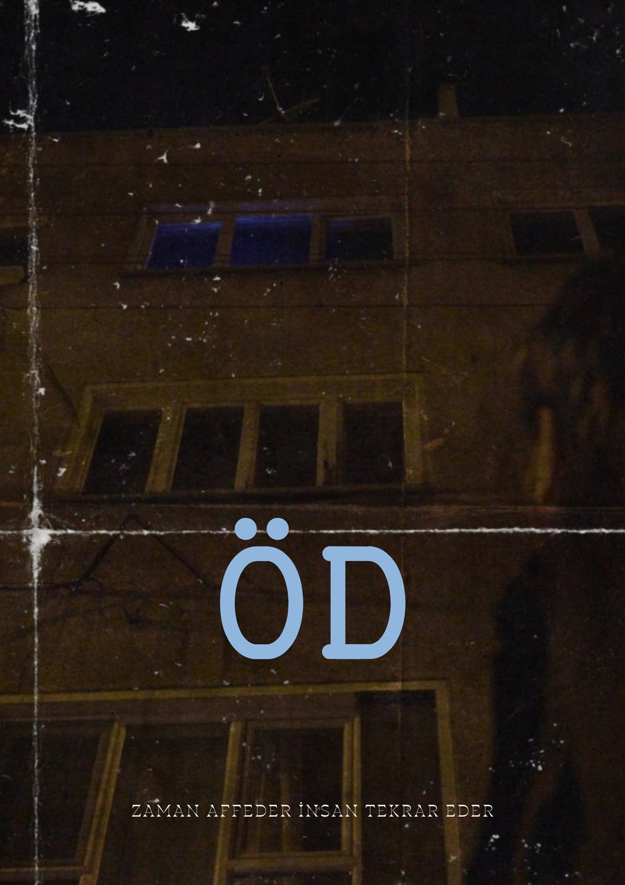
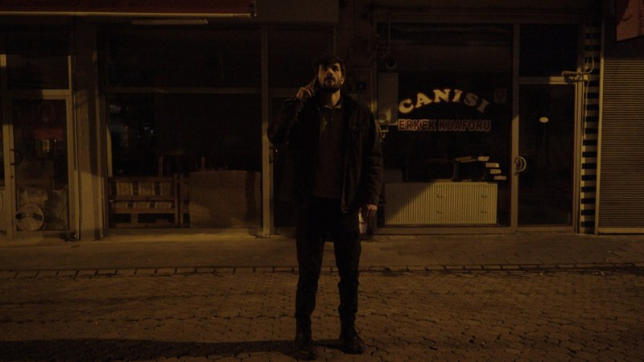

1


SahnedenÖD
Zamana hapsolmuş bir adam üzerinden, modern ilişkilerdeki iletişim kopukluğunu işleyen bir kısa metraj.
🏆International Inter University Short Film Festival — Resmi Seçki🏆3. Uluslararası İnsan, Kültür ve Toplum Kısa Film Yarışması — Finalist
İzle